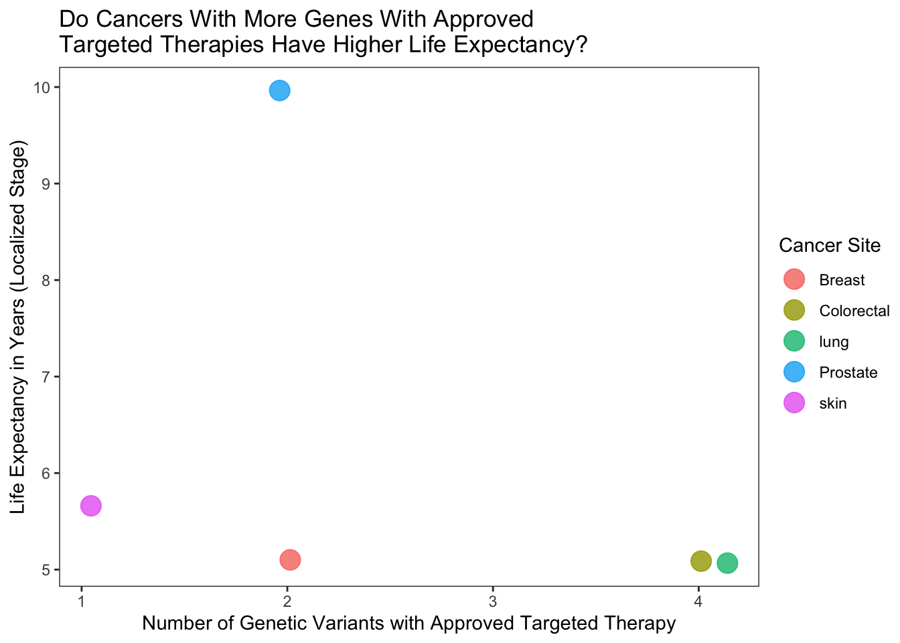

This project was a quick exercise in data engineering, ETL, SQL, NoSQL, and text processing with OpenAI GPT-3.
Libraries
Code
# Import libsimport sqlite3import pandas as pdimport matplotlib.pyplot as pltimport seaborn as snsfrom pymongo import MongoClientimport openaifrom urllib.request import urlopenfrom bs4 import BeautifulSoupimport reimport jsonimport ast
Setup MongoDB Database
Create a MongoDB database and define functions to insert and query data.
Code
# Function to create MongoDB database and collectiondef create_mongo_connection():# Create a MongoDB client client = MongoClient('mongodb://localhost:27017/')# Connect to the "cancerDB" database db = client['cancerDB']return dbdef insert_data_mongo(collection, data):# Insert a document into the specified collection collection.insert_one(data)def query_data_mongo(collection, query):# Find documents in the specified collection that match the query results = collection.find(query)returnlist(results)
Scrape Wikipedia Pages
Use urlopen to scrape the Wikipedia page for each state and store the raw text in MongoDB.
Code
# Function to scrape Wikipedia pages and store the raw text in MongoDBdef scrape_wikipedia_pages(cancers, db):# Use the "wikipediaText" collection wiki_text_collection = db['wikipediaText'] base_url ="https://en.wikipedia.org/wiki/"for cancer in cancers:# Create the URL for the Wikipedia page url = base_url + cancer.replace(" ", "_")# Open the URL and get the raw HTML html = urlopen(url)# Parse the HTML with BeautifulSoup to extract the text soup = BeautifulSoup(html, 'html.parser') text = soup.get_text()# Store the text in MongoDB data = {"cancer_type": cancer, "text": text} insert_data_mongo(wiki_text_collection, data)
Setup SQLite Database
Create a SQLite database and define a function to execute SQL commands.
Code
# Function to create SQLite database and tabledef create_connection():# Create a connection to the SQLite database conn = sqlite3.connect('my_database.db')return conndef create_table(conn, table_name, columns):# Create a table in the SQLite database query =f"CREATE TABLE {table_name} ({columns});"# Function to execute SQL querydef execute_query(conn, query):# Execute the specified SQL query and print the results cur = conn.cursor() cur.execute(query) rows = cur.fetchall()for row in rows:print(row)# Function to load data from OpenAI API to databasedef load_data_to_db(conn, table_name, data):# Insert the data into the specified table in the SQLite database df = pd.DataFrame(data, index=[0]) df.to_sql(table_name, conn, if_exists='append', index=False)
Use OpenAI API to Extract Data w/ GPT3.5
Use the OpenAI API to extract structured data from the raw text of each Wikipedia page.
Code
# Function to use OpenAI APIdef extract_cancer_info(text): openai.api_key = api_key# Set up the conversation messages = [ {"role": "system", "content": "You are a helpful assistant in a medical oncology research office."}, {"role": "user", "content": f"{text}\n\nGiven the above text, extract the following information:\nOne word primary cancer location as a string: \nOne word most common metastasis site as a string: \nTypical life expectancy for localized disease in years as a float:\n Common Gene mutation Variants as a list of strings: \n Whether each common mutation has a targeted therapy avaialble for this cancer as a list of booleans True or False:\nAll Approved Drugs as a list of strings:\n Class of each approved drug, either immunotherapy, chemotherapy, or hormonal_therapy as a list of strings:\n Please return results in a tidy format as a python dictionary. They keys for the dictionary should be the following: primary_cancer_location, metastasis_site, life_expectancy, common_gene_mutations, targeted_therapy_available, drug_name, drug_class. Values for each key should be the corresponding value extracted from the text in the appropriate format specified above."} ]# Use gpt-3.5-turbo and the openai.ChatCompletion.create method response = openai.ChatCompletion.create( model="gpt-3.5-turbo-16k", messages=messages )return response['choices'][0]['message']['content'].strip()
Test Function for API Response
This ensures the response from Open AI has the correct format for loading into the SQL tables
Code
def validate_response(response_string):# Replace "true" and "false" with "True" and "False" response_string = response_string.replace("true", "True").replace("false", "False")try: response_dict = ast.literal_eval(response_string)except (SyntaxError, ValueError):raiseValueError(f"Unable to convert response to dictionary: {response_string}") required_keys = ["primary_cancer_location", "metastasis_site", "life_expectancy", "common_gene_mutations", "targeted_therapy_available", "drug_name", "drug_class"]for key in required_keys:if key notin response_dict:raiseValueError(f"Missing key in response: {key}")# Check that the lists are of the same length list_keys = ["common_gene_mutations", "targeted_therapy_available"] list_lengths = [len(response_dict[key]) for key in list_keys]iflen(set(list_lengths)) !=1:raiseValueError("The lists in the response are not of the same length") list_keys = ["drug_name", "drug_class"] list_lengths = [len(response_dict[key]) for key in list_keys]iflen(set(list_lengths)) !=1:raiseValueError("The lists in the response are not of the same length")# Check that life_expectancy is a doubleifnotisinstance(response_dict["life_expectancy"], float):raiseValueError("life_expectancy is not a double")# Check that the elements in the lists are of the correct typeifnotall(isinstance(item, str) for item in response_dict["common_gene_mutations"]):raiseValueError("common_gene_mutations does not contain only strings")ifnotall(isinstance(item, bool) for item in response_dict["targeted_therapy_available"]):raiseValueError("targeted_therapy_available does not contain only booleans")ifnotall(isinstance(item, str) for item in response_dict["drug_name"]):raiseValueError("drug_name does not contain only strings")ifnotall(isinstance(item, str) for item in response_dict["drug_class"]):raiseValueError("drug_class does not contain only strings")return response_dict
ETL Process
Clean and transform the data, and load the data into SQLite tables.
Code
# Start MongoDB#os.system("brew services start mongodb-community@6.0")db = create_mongo_connection()# Scrape Wikipedia pages and store the raw text in MongoDBcancer_types = ["Breast cancer", "Lung cancer", "Prostate cancer", "Colorectal cancer", "Skin cancer"]scrape_wikipedia_pages(cancer_types, db)# Create a connection to the SQLite databaseconn = create_connection()# Create a table for cancer typescreate_table(conn, "Cancers5", "id INTEGER PRIMARY KEY, primary_cancer_location TEXT NOT NULL, metastasis_site TEXT, life_expectancy INT")# Create a table for gene variantscreate_table(conn, "Genes6", "id INTEGER PRIMARY KEY, primary_cancer_location TEXT, common_gene_mutations TEXT, targeted_therapy_available BOOLEAN")# Create a table for drugscreate_table(conn, "Drugs5", """id INTEGER PRIMARY KEY, drug_name TEXT NOT NULL, drug_class TEXT CHECK( drug_class IN ('chemotherapy', 'immunotherapy', 'hormonal_therapy')), primary_cancer_location TEXT""")# Loop through each cancer type, extract data and load it into SQL tablesfor cancer_type in cancer_types:# Extract the raw text from MongoDB and clean it text = query_data_mongo(db["wikipediaText"], {"cancer_type": cancer_type}) clean_text = re.findall(r'From Wikipedia, the free encyclopedia[\S\s]+References', text[0]['text'])[0].replace("\n", " ").strip()# call the API and validate the response data = extract_cancer_info(clean_text) data_dict = validate_response(data)# create a DataFrame for the cancer data cancer_df = pd.DataFrame.from_dict({"primary_cancer_location": [data_dict["primary_cancer_location"]],"metastasis_site": [data_dict["metastasis_site"]],"life_expectancy": [data_dict["life_expectancy"]]})# create a DataFrame for the gene data# Create a list of tuples, where each tuple contains a mutation and its corresponding targeted therapy availability mutations_data =list(zip(data_dict["common_gene_mutations"], data_dict["targeted_therapy_available"]))# Create the DataFrame from the list of tuples genes_df = pd.DataFrame(mutations_data, columns=["common_gene_mutations", "targeted_therapy_available"])# Add the cancer_type column to the DataFrame genes_df["primary_cancer_location"] = data_dict["primary_cancer_location"]# Same process but with the drug data drugs_data =list(zip(data_dict["drug_name"], data_dict["drug_class"])) drugs_df = pd.DataFrame(drugs_data, columns=["drug_name", "drug_class"]) drugs_df["primary_cancer_location"] = data_dict["primary_cancer_location"]# load dfs into the respective tables cancer_df.to_sql('Cancer5', conn, if_exists='append', index=False) genes_df.to_sql('Genes6', conn, if_exists='append', index=False) drugs_df.to_sql('Drugs5', conn, if_exists='append', index=False)
Data Querying
Query the data in the SQLite database and saving the results to a CSV file.
Code
# Execute the querydf = pd.read_sql_query("""SELECT Cancer5.primary_cancer_location, Cancer5.life_expectancy, COUNT(Genes6.targeted_therapy_available) as num_targeted_therapyFROM Cancer5LEFT JOIN Genes6 ON Cancer5.primary_cancer_location = Genes6.primary_cancer_locationWHERE Genes6.targeted_therapy_available = 1GROUP BY Cancer5.primary_cancer_location;""", conn)df.to_csv("cancer_data.csv")
Visualization
Visualization in R because I think it is much much better than python for this purpose.
New names:
Rows: 5 Columns: 4
── Column specification
──────────────────────────────────────────────────────── Delimiter: "," chr
(1): primary_cancer_location dbl (3): ...1, life_expectancy,
num_targeted_therapy
ℹ Use `spec()` to retrieve the full column specification for this data. ℹ
Specify the column types or set `show_col_types = FALSE` to quiet this message.
• `` -> `...1`
Code
ggplot(cancer_data, aes(x=num_targeted_therapy,y=life_expectancy, color = primary_cancer_location)) +geom_jitter(size=5, width=0.15,height=0.15, alpha =0.8) +labs(x="Number of Genetic Variants with Approved Targeted Therapy",y="Life Expectancy in Years (Localized Stage)",color="Cancer Site")+ggtitle("Do Cancers With More Genes With Approved\nTargeted Therapies Have Higher Life Expectancy?") +theme_test()

Source Code
---title: "Wikipedia Cancer Queries with OpenAI API & SQL"author: "Dave Hein"date: "2023-07-12"categories: [Python, Natural language processing, SQL]image: "typewriter.jpg"format: html: toc: true code-fold: show code-tools: true---```{=html}<style type="text/css">code.r{ font-size: 14px;}td { font-size: 12px;}code.python{ font-size: 14px;}pre { font-size: 12px;}</style>```# Wikipedia Cancer QueryThis project was a quick exercise in data engineering, ETL, SQL, NoSQL, and text processing with OpenAI GPT-3.```{r, warning=FALSE, message=FALSE, include=FALSE}library(tidyverse)library(reticulate)library(rmarkdown)library(knitr)use_condaenv("website_env", required =TRUE)knitr::opts_chunk$set(python.reticulate =FALSE)```## Libraries```{python, eval=FALSE}# Import libsimport sqlite3import pandas as pdimport matplotlib.pyplot as pltimport seaborn as snsfrom pymongo import MongoClientimport openaifrom urllib.request import urlopenfrom bs4 import BeautifulSoupimport reimport jsonimport ast```## Setup MongoDB DatabaseCreate a MongoDB database and define functions to insert and query data.```{python, eval=FALSE}# Function to create MongoDB database and collectiondef create_mongo_connection():# Create a MongoDB client client = MongoClient('mongodb://localhost:27017/')# Connect to the "cancerDB" database db = client['cancerDB']return dbdef insert_data_mongo(collection, data):# Insert a document into the specified collection collection.insert_one(data)def query_data_mongo(collection, query):# Find documents in the specified collection that match the query results = collection.find(query)returnlist(results)```## Scrape Wikipedia PagesUse urlopen to scrape the Wikipedia page for each state and store the raw text in MongoDB.```{python, eval=FALSE}# Function to scrape Wikipedia pages and store the raw text in MongoDBdef scrape_wikipedia_pages(cancers, db):# Use the "wikipediaText" collection wiki_text_collection = db['wikipediaText'] base_url ="https://en.wikipedia.org/wiki/"for cancer in cancers:# Create the URL for the Wikipedia page url = base_url + cancer.replace(" ", "_")# Open the URL and get the raw HTML html = urlopen(url)# Parse the HTML with BeautifulSoup to extract the text soup = BeautifulSoup(html, 'html.parser') text = soup.get_text()# Store the text in MongoDB data = {"cancer_type": cancer, "text": text} insert_data_mongo(wiki_text_collection, data)```## Setup SQLite DatabaseCreate a SQLite database and define a function to execute SQL commands.```{python, eval=FALSE}# Function to create SQLite database and tabledef create_connection():# Create a connection to the SQLite database conn = sqlite3.connect('my_database.db')return conndef create_table(conn, table_name, columns):# Create a table in the SQLite database query =f"CREATE TABLE {table_name} ({columns});"# Function to execute SQL querydef execute_query(conn, query):# Execute the specified SQL query and print the results cur = conn.cursor() cur.execute(query) rows = cur.fetchall()for row in rows:print(row)# Function to load data from OpenAI API to databasedef load_data_to_db(conn, table_name, data):# Insert the data into the specified table in the SQLite database df = pd.DataFrame(data, index=[0]) df.to_sql(table_name, conn, if_exists='append', index=False)```## Use OpenAI API to Extract Data w/ GPT3.5Use the OpenAI API to extract structured data from the raw text of each Wikipedia page.```{python, eval=FALSE}# Function to use OpenAI APIdef extract_cancer_info(text): openai.api_key = api_key# Set up the conversation messages = [ {"role": "system", "content": "You are a helpful assistant in a medical oncology research office."}, {"role": "user", "content": f"{text}\n\nGiven the above text, extract the following information:\nOne word primary cancer location as a string: \nOne word most common metastasis site as a string: \nTypical life expectancy for localized disease in years as a float:\n Common Gene mutation Variants as a list of strings: \n Whether each common mutation has a targeted therapy avaialble for this cancer as a list of booleans True or False:\nAll Approved Drugs as a list of strings:\n Class of each approved drug, either immunotherapy, chemotherapy, or hormonal_therapy as a list of strings:\n Please return results in a tidy format as a python dictionary. They keys for the dictionary should be the following: primary_cancer_location, metastasis_site, life_expectancy, common_gene_mutations, targeted_therapy_available, drug_name, drug_class. Values for each key should be the corresponding value extracted from the text in the appropriate format specified above."} ]# Use gpt-3.5-turbo and the openai.ChatCompletion.create method response = openai.ChatCompletion.create( model="gpt-3.5-turbo-16k", messages=messages )return response['choices'][0]['message']['content'].strip()```## Test Function for API ResponseThis ensures the response from Open AI has the correct format for loading into the SQL tables```{python, eval=FALSE}def validate_response(response_string):# Replace "true" and "false" with "True" and "False" response_string = response_string.replace("true", "True").replace("false", "False")try: response_dict = ast.literal_eval(response_string)except (SyntaxError, ValueError):raiseValueError(f"Unable to convert response to dictionary: {response_string}") required_keys = ["primary_cancer_location", "metastasis_site", "life_expectancy", "common_gene_mutations", "targeted_therapy_available", "drug_name", "drug_class"]for key in required_keys:if key notin response_dict:raiseValueError(f"Missing key in response: {key}")# Check that the lists are of the same length list_keys = ["common_gene_mutations", "targeted_therapy_available"] list_lengths = [len(response_dict[key]) for key in list_keys]iflen(set(list_lengths)) !=1:raiseValueError("The lists in the response are not of the same length") list_keys = ["drug_name", "drug_class"] list_lengths = [len(response_dict[key]) for key in list_keys]iflen(set(list_lengths)) !=1:raiseValueError("The lists in the response are not of the same length")# Check that life_expectancy is a doubleifnotisinstance(response_dict["life_expectancy"], float):raiseValueError("life_expectancy is not a double")# Check that the elements in the lists are of the correct typeifnotall(isinstance(item, str) for item in response_dict["common_gene_mutations"]):raiseValueError("common_gene_mutations does not contain only strings")ifnotall(isinstance(item, bool) for item in response_dict["targeted_therapy_available"]):raiseValueError("targeted_therapy_available does not contain only booleans")ifnotall(isinstance(item, str) for item in response_dict["drug_name"]):raiseValueError("drug_name does not contain only strings")ifnotall(isinstance(item, str) for item in response_dict["drug_class"]):raiseValueError("drug_class does not contain only strings")return response_dict```## ETL ProcessClean and transform the data, and load the data into SQLite tables.```{python, eval=FALSE}# Start MongoDB#os.system("brew services start mongodb-community@6.0")db = create_mongo_connection()# Scrape Wikipedia pages and store the raw text in MongoDBcancer_types = ["Breast cancer", "Lung cancer", "Prostate cancer", "Colorectal cancer", "Skin cancer"]scrape_wikipedia_pages(cancer_types, db)# Create a connection to the SQLite databaseconn = create_connection()# Create a table for cancer typescreate_table(conn, "Cancers5", "id INTEGER PRIMARY KEY, primary_cancer_location TEXT NOT NULL, metastasis_site TEXT, life_expectancy INT")# Create a table for gene variantscreate_table(conn, "Genes6", "id INTEGER PRIMARY KEY, primary_cancer_location TEXT, common_gene_mutations TEXT, targeted_therapy_available BOOLEAN")# Create a table for drugscreate_table(conn, "Drugs5", """id INTEGER PRIMARY KEY, drug_name TEXT NOT NULL, drug_class TEXT CHECK( drug_class IN ('chemotherapy', 'immunotherapy', 'hormonal_therapy')), primary_cancer_location TEXT""")# Loop through each cancer type, extract data and load it into SQL tablesfor cancer_type in cancer_types:# Extract the raw text from MongoDB and clean it text = query_data_mongo(db["wikipediaText"], {"cancer_type": cancer_type}) clean_text = re.findall(r'From Wikipedia, the free encyclopedia[\S\s]+References', text[0]['text'])[0].replace("\n", " ").strip()# call the API and validate the response data = extract_cancer_info(clean_text) data_dict = validate_response(data)# create a DataFrame for the cancer data cancer_df = pd.DataFrame.from_dict({"primary_cancer_location": [data_dict["primary_cancer_location"]],"metastasis_site": [data_dict["metastasis_site"]],"life_expectancy": [data_dict["life_expectancy"]]})# create a DataFrame for the gene data# Create a list of tuples, where each tuple contains a mutation and its corresponding targeted therapy availability mutations_data =list(zip(data_dict["common_gene_mutations"], data_dict["targeted_therapy_available"]))# Create the DataFrame from the list of tuples genes_df = pd.DataFrame(mutations_data, columns=["common_gene_mutations", "targeted_therapy_available"])# Add the cancer_type column to the DataFrame genes_df["primary_cancer_location"] = data_dict["primary_cancer_location"]# Same process but with the drug data drugs_data =list(zip(data_dict["drug_name"], data_dict["drug_class"])) drugs_df = pd.DataFrame(drugs_data, columns=["drug_name", "drug_class"]) drugs_df["primary_cancer_location"] = data_dict["primary_cancer_location"]# load dfs into the respective tables cancer_df.to_sql('Cancer5', conn, if_exists='append', index=False) genes_df.to_sql('Genes6', conn, if_exists='append', index=False) drugs_df.to_sql('Drugs5', conn, if_exists='append', index=False)```## Data QueryingQuery the data in the SQLite database and saving the results to a CSV file.```{python, eval=FALSE}# Execute the querydf = pd.read_sql_query("""SELECT Cancer5.primary_cancer_location, Cancer5.life_expectancy, COUNT(Genes6.targeted_therapy_available) as num_targeted_therapyFROM Cancer5LEFT JOIN Genes6 ON Cancer5.primary_cancer_location = Genes6.primary_cancer_locationWHERE Genes6.targeted_therapy_available = 1GROUP BY Cancer5.primary_cancer_location;""", conn)df.to_csv("cancer_data.csv")```## VisualizationVisualization in R because I think it is much much better than python for this purpose.```{r}cancer_data <-read_csv("posts/api_and_sql/cancer_data.csv")ggplot(cancer_data, aes(x=num_targeted_therapy,y=life_expectancy, color = primary_cancer_location)) +geom_jitter(size=5, width=0.15,height=0.15, alpha =0.8) +labs(x="Number of Genetic Variants with Approved Targeted Therapy",y="Life Expectancy in Years (Localized Stage)",color="Cancer Site")+ggtitle("Do Cancers With More Genes With Approved\nTargeted Therapies Have Higher Life Expectancy?") +theme_test()```